Branding · Visuel identitet
Storcenter
Nord
Et legende visuelt univers udviklet til Storcenter Nord. Projektet kombinerer en tydelig identitet med farverige illustrationer, der kan bruges på både digitale og trykte flader.
Udforsk projektet ↓Storcenter Nord
Visuel identitet
Logo · Style tile · Illustrationer
Digitalt · Print
Den visuelle retning
Et farverigt univers under overfladen
Style tilen samler farver, typografi, former og den legende illustrationstil. Retningen gør materialerne genkendelige og giver plads til både humor og variation.
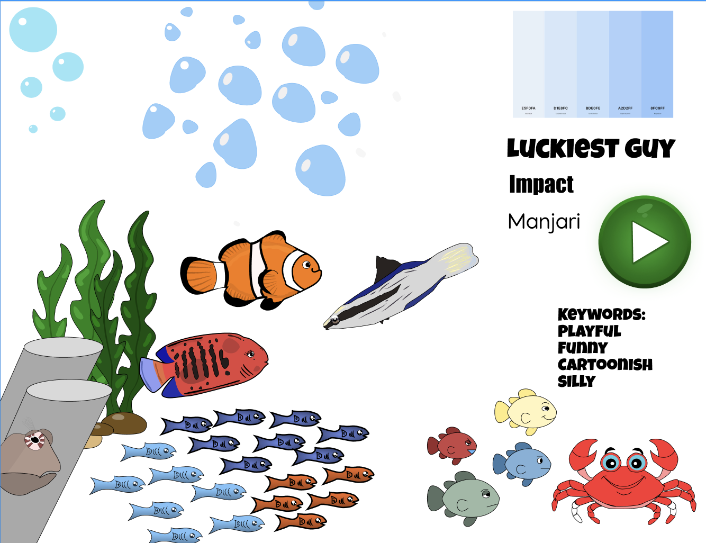
Illustrationssystem
Digitale & trykte materialer
Fisk, havplanter og figurer er tegnet som en samlet serie. Illustrationerne kan kombineres på tværs af kampagner, opslag, skilte og andre materialer uden at miste den fælles visuelle stil.
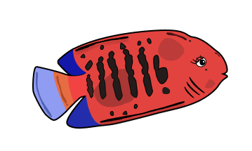
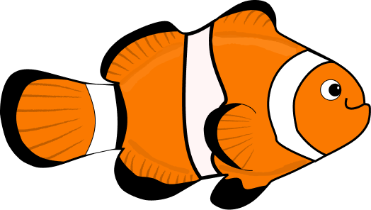
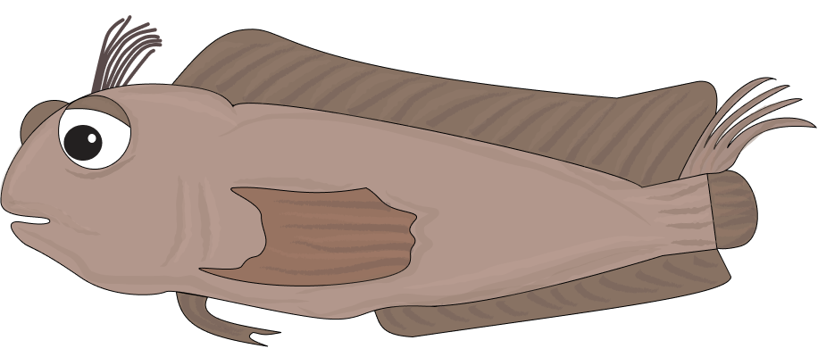
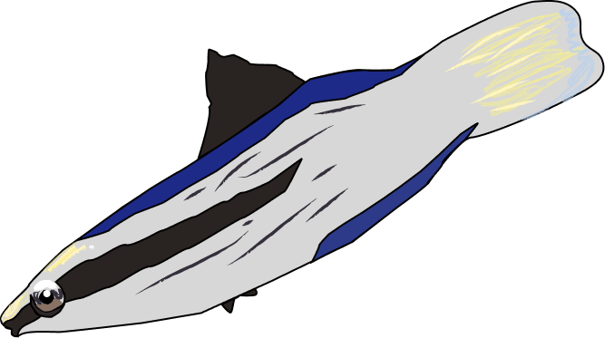
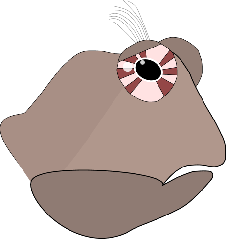
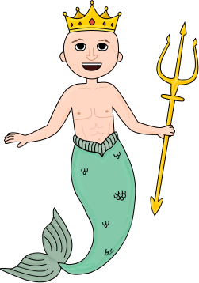
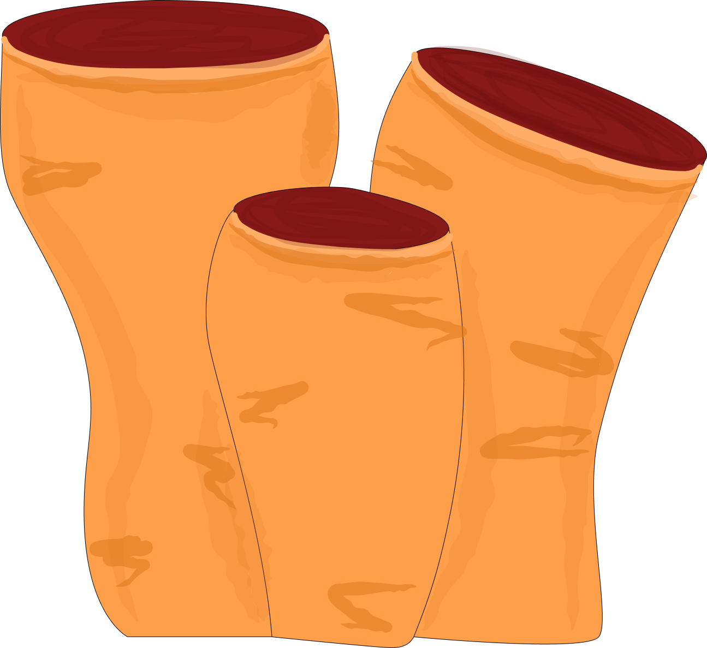
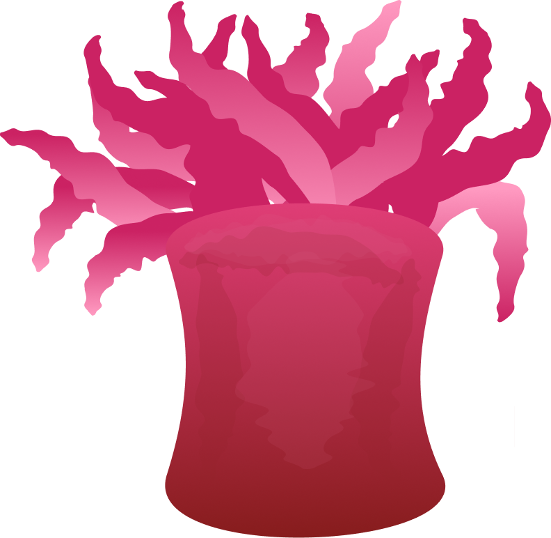
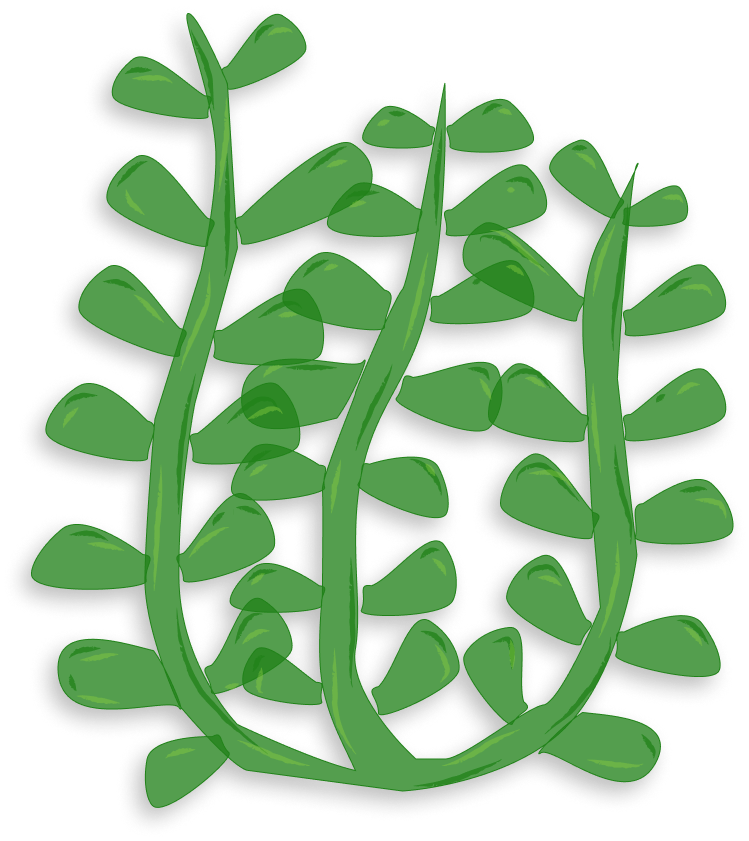
Det færdige produkt
Identiteten i brug
De færdige prototyper viser, hvordan logo, farver og illustrationer fungerer sammen i den endelige løsning.
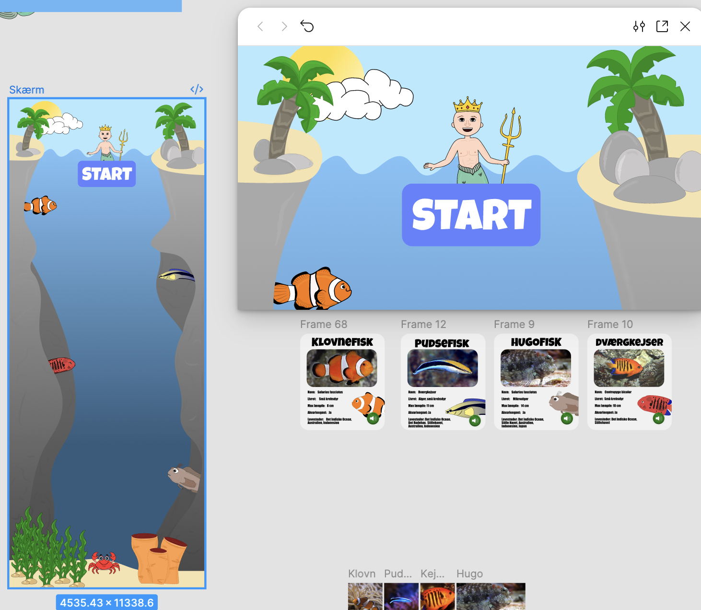
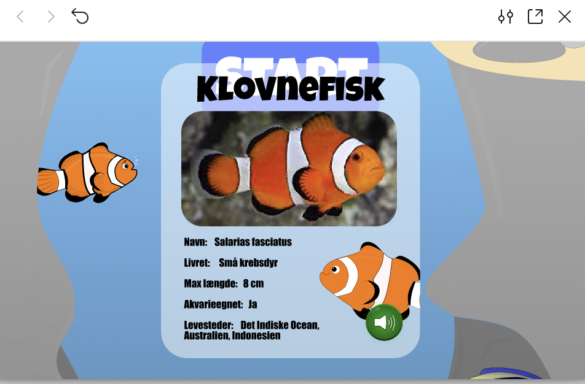
Resultat
En identitet med plads til leg.
Det færdige system giver Storcenter Nord en fleksibel samling af grafiske elementer, der fungerer sammen på tværs af medier.
Se alle projekter →